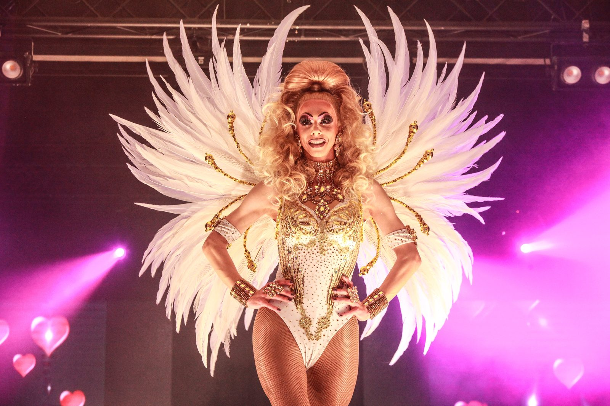

Creaties & strass-werk
Een echte vakvrouw in glitter en glamour — steentje voor steentje.

Elk kostuum een uniek kunstwerk
Naast haar schitterende optredens op het podium heeft Roxy Ryan ook een minder zichtbare, maar minstens even indrukwekkende passie: het strassen van kostuums. Met veel geduld, precisie en oog voor detail brengt ze haar eigen creaties tot leven door ze steentje voor steentje te voorzien van prachtige, fonkelende rhinestones.
Wat op het podium een moment duurt, kost achter de schermen vaak urenlang werk. Elk kostuum dat Roxy strast, is het resultaat van talrijke uren geduldig en nauwkeurig handwerk. Steen na steen wordt zorgvuldig geplaatst, tot er een uniek geheel ontstaat dat onder de spotlights schittert en fonkelt. Het is precies die combinatie van vakmanschap en creativiteit die haar kostuums zo bijzonder maakt, geen twee ontwerpen zijn ooit helemaal hetzelfde.
Ook voor andere artiesten
Roxy beperkt haar talent niet tot haar eigen garderobe. Ook andere artiesten uit de scene kloppen bij haar aan wanneer ze op zoek zijn naar een kostuum met die extra glans en uitstraling. Met haar ervaring en vakkennis weet ze telkens opnieuw een outfit om te toveren tot een waar pronkstuk, volledig op maat en naar de wensen van de artiest in kwestie.
Deze activiteit toont nog maar eens hoe veelzijdig en gedreven Roxy Ryan wel is. Naast haar talent als showqueen op het podium is ze dus ook achter de schermen een vakvrouw pur sang. Met haar oog voor detail, haar creativiteit en haar liefde voor alles wat blinkt en fonkelt, zorgt ze ervoor dat elk kostuum, of het nu haar eigen outfit is of dat van een andere artiest, helemaal klaar is om te schitteren onder de spotlights.
Zo bewijst Roxy telkens weer dat glamour niet enkel op het podium ontstaat, maar ook begint met liefde voor het vak, geduld en pure passie.

Creaties in beeld
Een greep uit kostuums die Roxy gestrast heeft, voor zichzelf en voor andere artiesten.
Gestrast voor Roxy Ryan
Gestrast voor Lexi Storm
Gestrast voor Roxy Ryan
Gestrast voor Gia Hermosa
Gestrast voor Dina Price
Gestrast voor Christine Dior
Gestrast voor Roxy Ryan
Op zoek naar een gestraste creatie op maat?
Neem contact op →